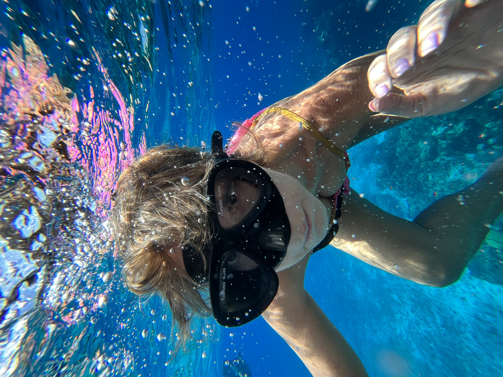
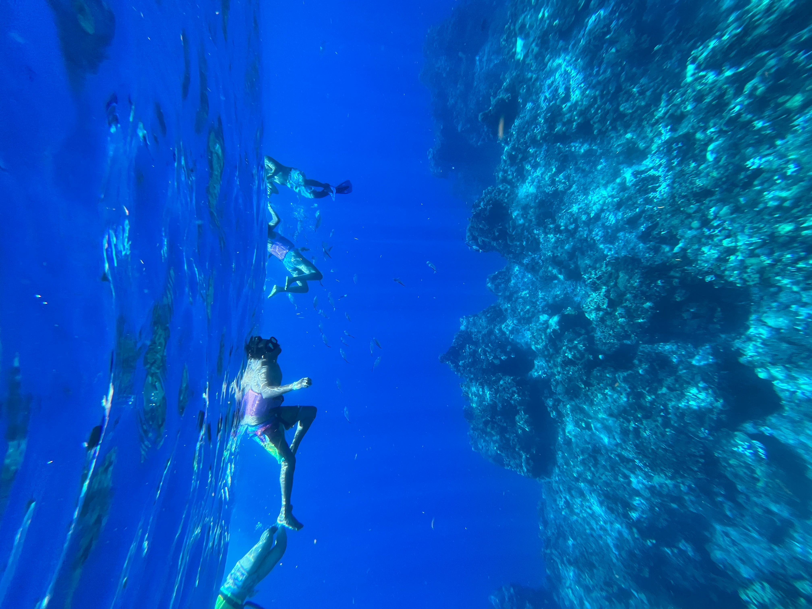
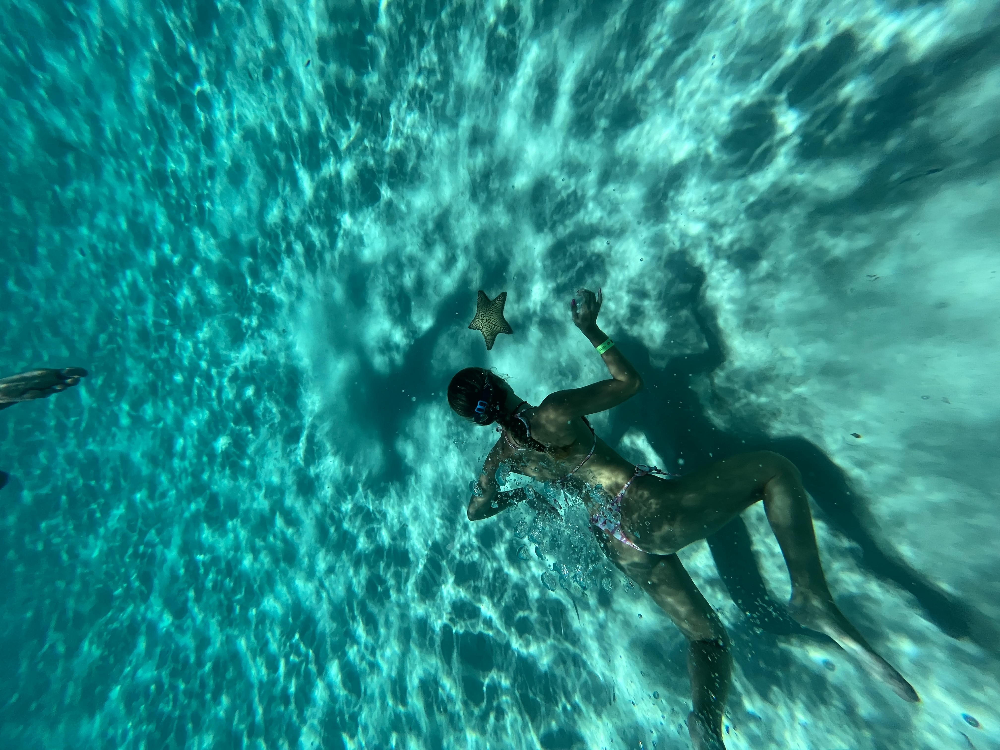
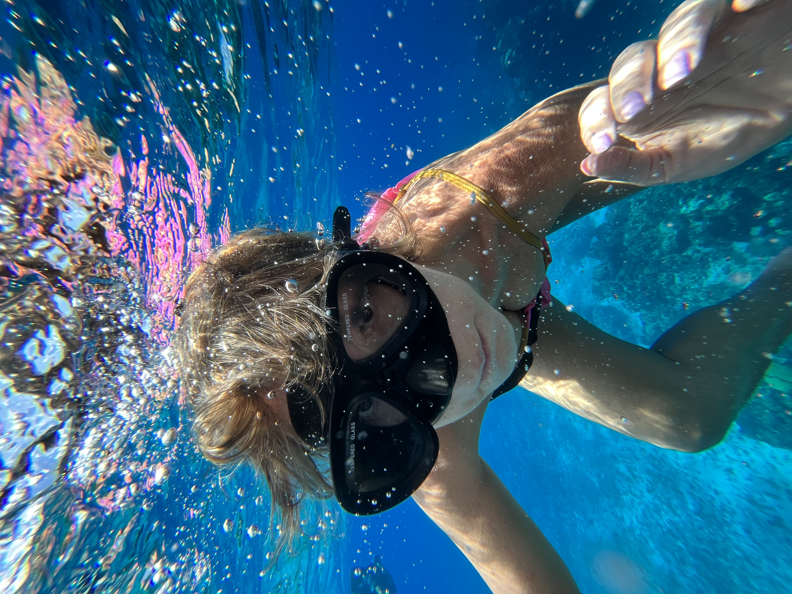
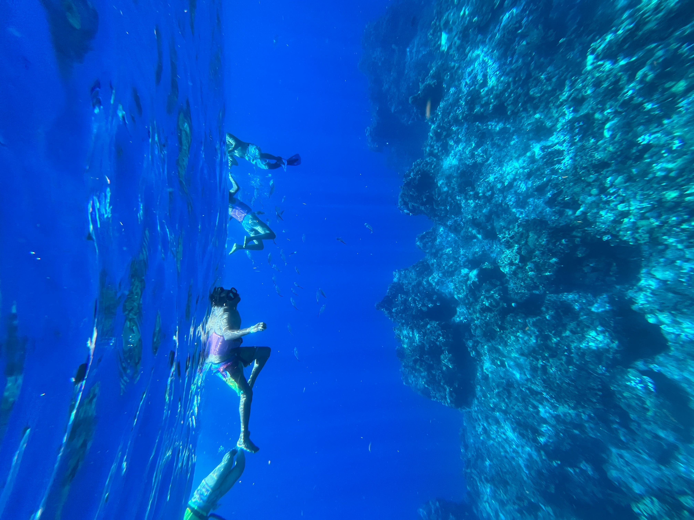
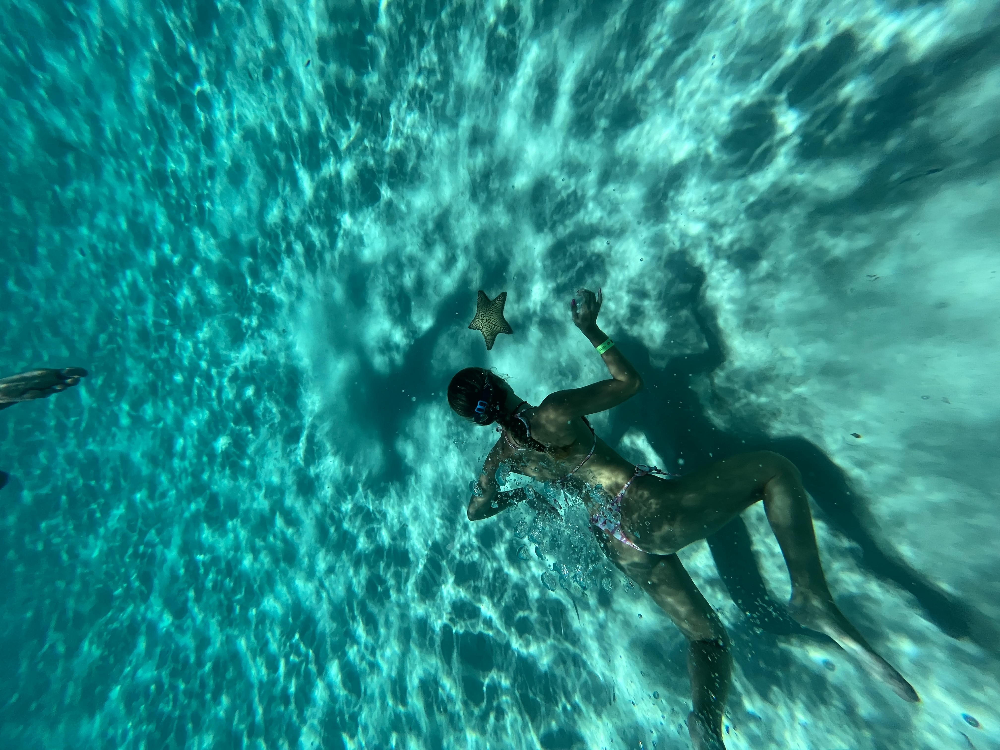

Haciendo snorkel en Cozumel, México
La aventura comienza cuando con mi familia nos bajamos del barco en Cozumel. Eran las 9 de la mañana por lo que decidimos ir directamente a hacer una excursión y les digo que fue la mejor excursión de mi vida. La excursión constaba de 3 paradas en las que todas se trataban de hacer snorkel en el mar, más un almuerzo en el medio de un lugar llamado "El cielito".
La primera parada nos lleveron a un arresife, donde estabamos a 20 metros de profundidad en el medio del mar. La segunda parada ya nos llevaron a las profundidades del oceano donde estabamos a 70 metros de profundidad, y fue en ese momento donde decidí agarrar el celular y sacar fotos de LA BELLEZA que estaba viendo. Los guías llevaron pan, para que así aparezcan los peces y que la experiencia sea maravillosa. Por último, en la tercer parada, nos llevaron a "El cielito", que es un lugar en el oceano donde se encuentran estrellas de mar a unos 7 metros de profundidad, en las que no se las puede tocar pero si se puede ir hasta el fondo a mirarlas de cerca. Esta última parada fue mágica ya que nunca en mi vida habia visto algo tan lindo como ese lugar y nunca habia visto una estrella de mar, por lo que es algo que va a quedar grabado en mi mente para siempre.
Además de hacer snorkel, disfruté de la gastronomía local, ya que los guías habian preparado ceviche para todos los de la excursión, y creo que fue el mejor ceviche que probé.
Sigo sin poder creer lo cerca que estuve de la vida marina, y me ayudo a darme cuenta lo importante que es y lo mucho que la tenemso que cuidar. Sin dudas es una de las experiencias mas facinantes que tuve en mi vida y que creo que todos los humanos la deberiamos vivir como minimo una vez en la vida.
“Sin dudas, un destino al que volvería.”
Tips para el viaje ✈️
- El mejor horario para snorkelear es por la mañana.
- Llevá protector solar biodegradable, para no hacerle daño a la fauna y flora del oceano.
- Si o si tenes que hacer la excursión de snorkel por "El cielito", no te vas a arrepentir.
- Te recomiendo ir en la fecha de agosto, que aunque hace calor, esta buena para hacer actividades en el agua.
- Si vas a recorrer la ciudad te recomiendo ir en Abril/Mayo, para tener un clima agradable.
- Para mi, lo mejor es hacer un crucero que te lleva a la ciudad y no tenes necesidad de quedarte muchos días.

 




